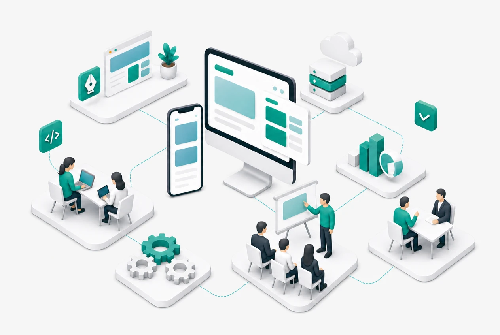
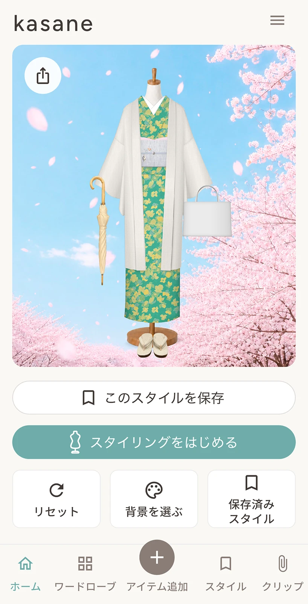
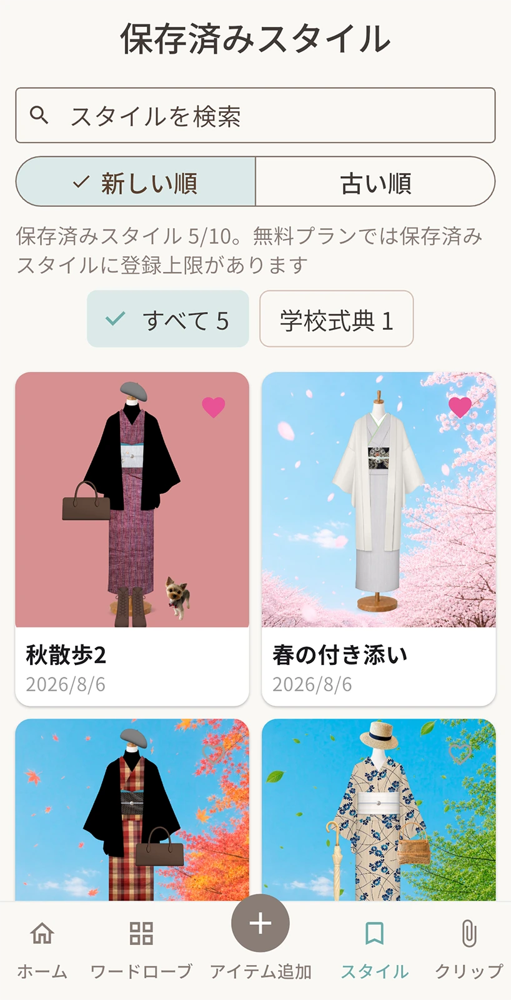
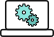

デザイン＆プロダクト制作
アイデアを、分かりやすく使いやすい形へ
- Webサイト・CMS制作
- Shopifyサイト制作・テーマカスタマイズ
- UI設計・画面改善
- 小規模アプリ・MVP制作
UI設計を起点に、Webサイトやアプリの制作、Webシステム開発、IT・DX人材育成、開発プロセス改善まで支援します。
お客様の課題やご要望を整理し、内容に応じた体制で、アイデアの実現と人・チームの成長をお手伝いします。

ご提供できること
UI設計やWebサイト・アプリ制作から、フロントエンド・バックエンドを含むWebシステム開発、IT・DX人材育成、開発プロセス改善まで幅広く支援します。
ご相談内容に応じた体制で、小規模な試作から複数の機能を組み合わせたシステム開発、企業・チーム向け研修まで対応します。
アイデアを、分かりやすく使いやすい形へ
目的や業務に合った仕組みを設計・開発
人とチームの成長、開発現場の改善を支援
これまでの実績と経験
アプリの企画・UI設計・開発をはじめ、Webサイト・CMS制作、Webシステム開発、IT・DX人材育成、開発プロセス改善に携わってきました。
非公開の実績は、お問い合わせ時に可能な範囲でご紹介します。


企画・UI設計・アプリ開発
デザイン＆プロダクト着物や帯、小物を登録し、コーディネートを確認・保存できるアプリです。企画・UI設計、Flutter開発、ストア公開、サポートサイト制作まで一貫して手がけました。
※Android版は公開準備中です。
API・データベース連携、バックエンド開発
Webシステム開発API・データベース連携、バックエンド開発
Webシステム開発ご相談内容に合わせた支援体制
まずはお話を伺い、課題やご要望を整理しながら、進め方をご案内します。
Webシステム開発や人材育成、開発プロセス改善については、各分野の経験を持つ担当者と連携し、ご相談内容に応じた体制で支援します。
ヒアリング・課題整理・進行案内
ご相談内容に応じて、
3つの専門領域で支援します
課題整理・UI設計
制作・全体進行
技術設計
フロント・バックエンド開発
研修・教材設計
開発プロセス改善
ご相談の流れ
お困りごとやご要望をお知らせください
目的・ご予算・スケジュールを整理します
対応内容・進め方・費用をご案内します

確認と共有を重ねながら進めます
納品後の運用・改善もご相談いただけます
私たちについて
maple labは、デザインと開発、それぞれの専門性を持つ夫婦で運営する制作・開発ユニットです。
WebサイトやアプリのUI設計から、Webシステム開発、IT・DX人材育成、開発プロセス改善まで、ご相談内容に応じて二人の経験を組み合わせて支援します。
Webサイト・CMSの構築や改修、自動車部品のUI設計などに携わってきました。
Flutterによるアプリ開発にも取り組み、kasaneでは企画・UI設計、開発、App Store公開、サポートサイト制作まで一貫して担当しています。
使う方と運用する方の双方にとって、分かりやすく使いやすい設計を大切にしています。
開発プロセスのコンサルティングやフロントエンド・バックエンド開発、API・データベース連携を含むWebシステム開発に携わってきました。
旅行会社・公益財団法人向けWebシステム開発のほか、バックエンド開発講座の講師、IT・DX研修・教材制作、開発プロセス改善の経験があります。
ご相談内容に応じて担当領域を分けながら情報を共有し、
設計から制作・開発まで一貫して進めます。
小さなチームならではの連携のしやすさを生かし、
必要な専門性を過不足なく組み合わせます。
お問い合わせ
Web・アプリ制作、システム開発、研修・開発プロセス支援など、
内容がまとまっていない段階でもご相談いただけます。
現在のお困りごとや、実現したいことをお聞かせください。
制作・開発の外部パートナーとして、
部分的なご依頼や継続的なご相談も承っています。